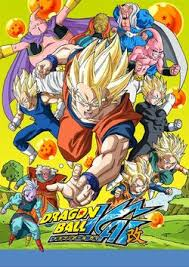
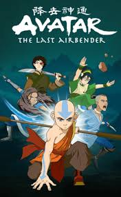
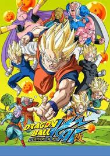
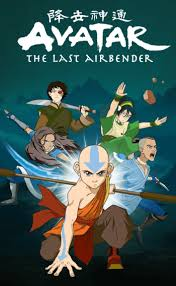

Television Animation Series(Ongoing) Rated PG-13
Genre: Action/Adventure (20 seasons)
Synopsis:
ONE PIECE is a legendary high-seas quest unlike any other.
Luffy is a young adventurer who has longed for a life of freedom
ever since he can remember. He sets off from his small village
on a perilous journey to find the legendary fabled treasure,
ONE PIECE, to become King of the Pirates!
Rating:
Television Animation Series Rated TV-PG
Genre: Action/Adventure (7 seasons)
Synopsis:
Goku is back, now married and has a son, Gohan, but just when
things were calm and settled a new threat comes which creates
adventures and uncover the truth about Goku's origins as a
Saiyan, a near to extinct race. Facing enemies far more powerful
then before Goku needs to train harder and reach limits he never
even dreamed of since what is at stake is the World itself.
Rating:
Kid's Television Animation Series TV-14
Genre: Action/Adventure(3 seasons)
Synopsis:
Siblings Katara and Sokka wake young Aang from a long
hibernation and learn he's an Avatar, whose air-bending powers
can defeat the evil Fire Nation.
Rating: